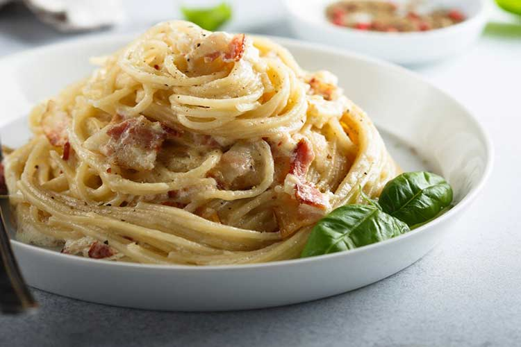

Carbonara

This classic spaghetti alla carbonara recipe is smooth, creamy, and full of rich Italian flavor.
Ingredients
- Oil
- Guanciale
- Spaghetti
- Eggs
- Cheese
- Seasonings
Steps
- Cook the pork in olive oil until browned and crispy, then drain on paper towels.
- Boil the spaghetti in salted water. Drain and return to the pot. Let cool.
- Whisk the eggs, 1/2 of the cheese, and some pepper in a bowl until smooth.
- Pour the egg mixture over the pasta, stirring quickly, until creamy.
- Stir in the pork, then top with the remaining cheese and more black pepper.
Home